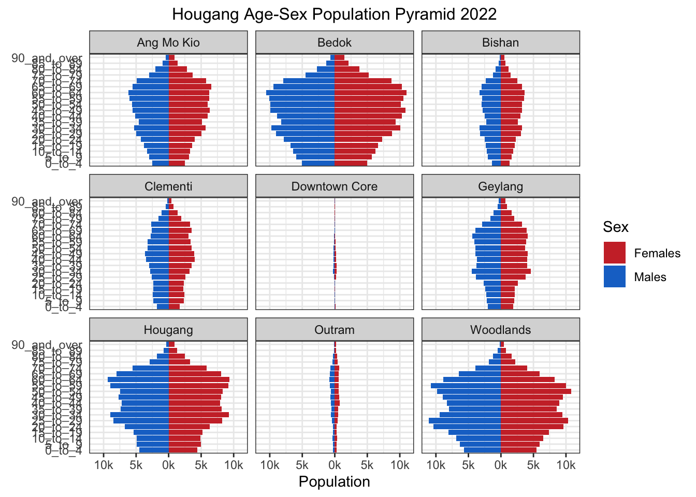

pacman::p_load(tidyverse, patchwork, ggthemes, hrbrthemes, ggrepel, dplyr) Self_Ex_Pyramid
# read csv file
pop <- read_csv("data/respopagesextod2022.csv")Rows: 100928 Columns: 7
── Column specification ────────────────────────────────────────────────────────
Delimiter: ","
chr (5): PA, SZ, AG, Sex, TOD
dbl (2): Pop, Time
ℹ Use `spec()` to retrieve the full column specification for this data.
ℹ Specify the column types or set `show_col_types = FALSE` to quiet this message.head(pop)# A tibble: 6 × 7
PA SZ AG Sex TOD Pop Time
<chr> <chr> <chr> <chr> <chr> <dbl> <dbl>
1 Ang Mo Kio Ang Mo Kio Town Centre 0_to_4 Males HDB 1- and 2-Room … 0 2022
2 Ang Mo Kio Ang Mo Kio Town Centre 0_to_4 Males HDB 3-Room Flats 10 2022
3 Ang Mo Kio Ang Mo Kio Town Centre 0_to_4 Males HDB 4-Room Flats 10 2022
4 Ang Mo Kio Ang Mo Kio Town Centre 0_to_4 Males HDB 5-Room and Exe… 30 2022
5 Ang Mo Kio Ang Mo Kio Town Centre 0_to_4 Males HUDC Flats (exclud… 0 2022
6 Ang Mo Kio Ang Mo Kio Town Centre 0_to_4 Males Condominiums and O… 50 2022filter_pop <- pop[which((pop$PA == 'Ang Mo Kio') | (pop$PA == 'Bedok') | (pop$PA == 'Bishan') | (pop$PA == 'Clementi') | (pop$PA == 'Downtown Core') | (pop$PA == 'Geylang') | (pop$PA == 'Outram') | (pop$PA == 'Hougang') | (pop$PA == 'Woodlands')),]
head(filter_pop)# A tibble: 6 × 7
PA SZ AG Sex TOD Pop Time
<chr> <chr> <chr> <chr> <chr> <dbl> <dbl>
1 Ang Mo Kio Ang Mo Kio Town Centre 0_to_4 Males HDB 1- and 2-Room … 0 2022
2 Ang Mo Kio Ang Mo Kio Town Centre 0_to_4 Males HDB 3-Room Flats 10 2022
3 Ang Mo Kio Ang Mo Kio Town Centre 0_to_4 Males HDB 4-Room Flats 10 2022
4 Ang Mo Kio Ang Mo Kio Town Centre 0_to_4 Males HDB 5-Room and Exe… 30 2022
5 Ang Mo Kio Ang Mo Kio Town Centre 0_to_4 Males HUDC Flats (exclud… 0 2022
6 Ang Mo Kio Ang Mo Kio Town Centre 0_to_4 Males Condominiums and O… 50 2022freq_pop <- filter_pop %>%
group_by(`AG`, `Sex`, `PA`) %>%
summarise('Count'= sum(`Pop`)) %>%
ungroup()`summarise()` has grouped output by 'AG', 'Sex'. You can override using the
`.groups` argument.head(freq_pop)# A tibble: 6 × 4
AG Sex PA Count
<chr> <chr> <chr> <dbl>
1 0_to_4 Females Ang Mo Kio 2480
2 0_to_4 Females Bedok 4970
3 0_to_4 Females Bishan 1320
4 0_to_4 Females Clementi 1740
5 0_to_4 Females Downtown Core 100
6 0_to_4 Females Geylang 1850order <- c("0_to_4", "5_to_9", "10_to_14", "15_to_19", "20_to_24", "25_to_29", "30_to_34", "35_to_39", "40_to_44", "45_to_49", "50_to_54", "55_to_59", "60_to_64", "65_to_69", "70_to_74", "75_to_79", "80_to_84", "85_to_89", "90_and_over")
sorted_pop <- freq_pop %>%
mutate(AG = factor(AG, levels = order)) %>%
arrange(AG)
head(sorted_pop)# A tibble: 6 × 4
AG Sex PA Count
<fct> <chr> <chr> <dbl>
1 0_to_4 Females Ang Mo Kio 2480
2 0_to_4 Females Bedok 4970
3 0_to_4 Females Bishan 1320
4 0_to_4 Females Clementi 1740
5 0_to_4 Females Downtown Core 100
6 0_to_4 Females Geylang 1850p <- ggplot(sorted_pop, aes(x = ifelse(Sex == "Males", yes = -Count, no = Count), y = AG, fill = Sex)) + geom_col() + facet_wrap(~PA, nrow = 3) + scale_x_continuous(breaks = c(-10000, -5000, 0, 5000, 10000), labels = paste0(c(10, 5, 0, 5, 10),"k")) + labs (x = "Population", y = "Age", title='Hougang Age-Sex Population Pyramid 2022') +
theme_bw() + theme(plot.title = element_text(size=12,hjust=0.5)) +
theme(axis.ticks.y = element_blank()) + theme(axis.title.y = element_text(size = 0.1 )) + scale_fill_manual(values = c("Males" = "dodgerblue3", "Females" = "brown3"))
p